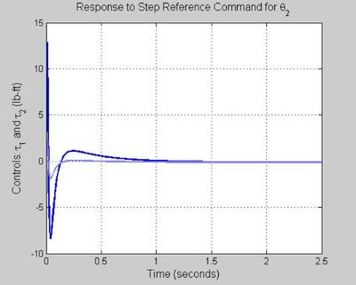

Puma 560 analysis
Use puma mfile to duplicate plots and analysis in text. Summarize results. Objective: Understand properties of a good design.
Contents
- PLANT (PUMA 560) STATE SPACE REPRESENTATION
- Natural Modes: Poles (Eigenvalues), Eigenvectors
- MODAL ANALYSIS
- Transmission Zeros
- CONTROLLABILITY
- OBSERVABILITY
- PLANT TFM
- Plant Frequency Response
- DC GAIN ANALYSIS
- ANALYSIS AT s = j1
- PLANT
- AUGMENT PLANT WITH INTEGRATORS
- BILINEAR TRANFORMATION (necessary if you augment with integrators)
- W1 - Weighting on Sensitivity TFM, S = (I + PK)^{1}
- W2 - Weighting on Control Sensitivity TFM, KS
- W3 - Weighting on Complementary Sensitivity TFM, T = I - S
- DO WEIGHTED HINFINITY MIXED-SENSITIVITY DESIGN
- INVERSE BILINEAR TRANFORMATION
- MODEL REDUCTION (if desired)
- AUGMENT CONTROLLER WITH INTEGRATORS (if needed)
- Use below code to make controller strictly proper (if needed)
- Form Closed Loop Maps
- Form state space representation for compensator K
- Form OUTPUT OPEN LOOP - Lo = PK
- Form OUTPUT complementary sensitivity - To = I - So = Lo (I + Lo)^{-1}
- Form Reference Command Pre-Filter - W
- Form OUTPUT sensitivity - So = (I+Lo)^{-1}
- Form reference to control - Tru = KSo (NO PRE-FILTER)
- Form INPUT disturbance to output - Tdi y = So P
- Form INPUT OPEN LOOP - Li = KP
- Form INPUT sensitivity - Si = (I + Li)^{-1}
- Form INPUT complementary sensitivity - Ti = I - Si = Li (I + Li)^{-1}
- CLOSED LOOP POLES
- FIGURE 5 - To PZMAP
- FREQUENCY RESPONSES
- FIGURE 10 - WEIGHTING FUNCTIONS
- DC GAIN ANALYSIS
- FIGURE 20 - PLANT
- FIGURE 25 - PLANT PZMAP
- FIGURE 30 - CONTROLLER, K
- FIGURE 35 - CONTROLLER K PZMAP
- FIGURE 40 - OPEN LOOP, Lo = PK
- FIGURE 45 - OPEN LOOP, Li = KP
- FIGURE 50 - OUTPUT SENSITIVITY, So = (I + Lo)^{-1}
- FIGURE 5.5 - INPUT SENSITIVITY, Si = (I + Li)^{-1}
- FIGURE 60 - OUTPUT COMPLEMENTARY SENSITIVITY , To = I - So = Lo(I+Lo)^{-1}
- Prefilter
- FIGURE 61 - OUTPUT COMPLEMENTARY SENSITIVITY WITH PRE-FILTER, Try = W To
- FIGURE 65 - INPUT COMPLEMENTARY SENSITIIVTY, Ti = I-Si = Li (I + Li)^{-1}
- FIGURE 70 - REFERENCE TO CONTROL (NO PRE-FILTER), Trhat u = K So = K (I + PK)^{-1}
- FIGURE 71 REFERENCE TO CONTROL with PRE-FILTER - Tru = WKSo
- FIGURE 80 INPUT DISTURBANCE TO OUTPUT, Tdiy = So P
- ON THE WRONG WAY TO FORM CLOSED LOOP MAPS !!!!
- TIME RESPONSES
- STEP COMMAND FOLLOWING (WITH PRE-FILTER)
- INPUT STEP DISTURBANCE ATTENUATION
- CLOSED LOOP INITIAL CONDITION RESPONSES
clear all; close all; clc format long; set(0, 'DefaultLineLineWidth', 2)
PLANT (PUMA 560) STATE SPACE REPRESENTATION
The following state space model was obtained by linearizing the nonlinear model about theta1 = 90 deg, theta2 = 0; i.e. both links vertical. Motor Dynamics have been neglected.
INPUTS: torque1, torque2 (both measured in lbft) STATES: theta1, theta2, theta1dot, theta2dot (units: deg and deg/sec) OUTPUTS: theta1, theta2 (both measured in degrees) theta1 is associated with lower link and is measured wrt horizontal theta2 is associated with upper link and is measured wrt center line of link 1 theta1 and theta2 are measured in degrees. torque1 is associated with link 1 and is measured in lbft. torque2 is associated with link 2 and is measured in lbft.
Ap = [ 0.0000 0.0000 1.0000 0.0000; 0.0000 0.0000 0.0000 1.0000; 31.7613 -33.0086 0.0000 0.0000; -56.9381 187.7089 0.0000 0.0000]; Bp = [ 0.0000 0.0000; 0.0000 0.0000; 103.7726 -391.9667; -391.9667 2030.8306]; Cp = [eye(2) zeros(2)]; Dp = zeros(2); P = ss(Ap, Bp, Cp, Dp); [ns,nc] = size(Bp); % Number of States, Number of Controls no = nc; % Number of Outputs
Natural Modes: Poles (Eigenvalues), Eigenvectors
%*************************************************************************** % The analysis of a system should begin with modal analysis; i.e. % understanding the natural modes or tendencies of a dynamical system. [evec,eval] = eig(Ap) % evec contains eigenvectors % eval contains poles or eigenvalues % This 4th order system has 2 unstable modes and 2 stable modes. % %eval = 14.1050 0 0 0 % 0 -14.1050 0 0 % 0 0 -4.5299 0 % 0 0 0 4.5299 % %evec = -0.0137 -0.0137 0.2041 -0.2041 % 0.0694 0.0694 0.0695 -0.0695 % -0.1932 0.1932 -0.9244 -0.9244 % 0.9786 -0.9786 -0.3148 -0.3148 % % The right half plane pole at s = 14.1050 is a standard "inverted pendulum" instability % This fast instability is associated primarily with theta_2 dot % % The left half plane pole at s = - 14.1050 is a standard "inverted pendulum" damping mode % It too is associated primarily with theta_2 dot % % The right half plane pole at s = 4.5299 is a standard "inverted pendulum" instability % This slow instability is associated primarily with theta_1 and theta_1 dot and theta_2 dot % % The left half plane pole at s = - 4.5299 is a standard "inverted pendulum" damping mode % It too is associated primarily with theta_1 and theta_1 dot %
evec =
-0.01369792127676 -0.01369792127676 -0.20405713247720 -0.20405713247720
0.06938017414194 0.06938017414194 -0.06949393852110 -0.06949393852110
-0.19320885081890 0.19320885081890 -0.92435520858745 0.92435520858745
0.97860569094706 -0.97860569094706 -0.31479950373414 0.31479950373414
eval =
14.10497599710599 0 0 0
0 -14.10497599710598 0 0
0 0 4.52988433859674 0
0 0 0 -4.52988433859673
MODAL ANALYSIS
We want to examine the natural modes (tendencies) of the system. We do so by studying the homogeneous (unforced) system and using system eigenvector information to select initial conditions to exicte each mode to be studied.
tinit = 0; tinc = 0.001; tfin = 0.5; t_vec = [tinit:tinc:tfin]; % Vector of uniformly spaced time points u_vec = [0*t_vec' 0*t_vec']; % Set input u to zero for all time in order to generate zero input response; % i.e. response to an initial condition x_o. % Excite Fast Instability. % This mode is associated with a pole at s = 14.1050. % is associated primarily with theta_2 dot. % % Comment: A real pendulum would oscillate...the angle would not grow. % The linear model therefore has limitations! % Stupidity has no limitations! fast_mode_resp_unstable = lsim(ss(Ap, Bp, eye(ns,ns), 0*ones(ns,nc)), u_vec, t_vec/5, evec(:,1)); figure('WindowStyle','docked','Name','Fast Instability: s = 14.1050'); plot(t_vec/5,fast_mode_resp_unstable); grid title('Fast Instability: s = 14.1050, x_o = [ -0.0137 0.0694 -0.1932 0.9786 ]^T') ylabel('States (deg, deg/sec)') xlabel('Time (seconds)') % Excite Slow Instability. % This mode is associated with a poles at s = 4.5299. % is associated primarily with theta_1 and theta_1 dot slow_mode_resp_unstable = lsim(ss(Ap, Bp, eye(ns,ns), 0*ones(ns,nc)), u_vec, t_vec, real(evec(:,3))); figure('WindowStyle','docked','Name','Slow Instability: s = 4.5299'); plot(t_vec,slow_mode_resp_unstable); grid title('Slow Instability: s = 4.5299, x_o = [ -0.2041 -0.0695 -0.9244 -0.3148 ]^T') ylabel('States (deg, deg/sec)') xlabel('Time (seconds)')
The fast instability at s = 14.1050 shows the system to be very unstable
far too unstable for a human operator to control
a feedback closed loop system is necesary for stability
Transmission Zeros
Inputs: torque1 torque2 (both measured in Nm)
States: theta1 theta2 theta1dot theta2dot (units: deg and deg/sec)
Outputs: theta1 theta2 (both measured in degrees)
plantzeros = tzero(ss(Ap,Bp,Cp,Dp)) % transmission zeros %zdir = null([z*eye(4)-ap -bp; cp dp]) % transmission zero directions % SYSTEM HAS NO FINITE TRANSMISSION ZEROS
plantzeros = Empty matrix: 0-by-1
CONTROLLABILITY
For control system design purposes, controllability is critical. It should always be checked.
rcm = rank(ctrb(Ap,Bp)) % Rank of Controllability Matrix % System is controllable if and only if % rank is n (number of states). % Be careful in using this command; Rank % can be numerically sensitive % What is the rank of [1 0 % 0 10^{-26} ]? % Strictly speaking, the answer is 2. % A finite precision computer may say 1!
rcm =
4
OBSERVABILITY
For control system design purposes, observability is also critical. It too should always be checked.
rom = rank(obsv(Ap,Cp)) % Rank of Observability Matrix % System is observable if and only if % rank is n (number of states).
rom =
4
PLANT TFM
zpk(P) % Generates plant transfer function matrix in zero-pole-gain form % % Zero/pole/gain from input 1 to output... % 103.7726 (s+7.939) (s-7.939) % #1: ----------------------------------- % (s-14.1) (s+14.1) (s+4.53) (s-4.53) % % -391.9667 (s+4.085) (s-4.085) % #2: ----------------------------------- <--- lower link torque1 impacts theta1 and theta2 comparably % (s-14.1) (s+14.1) (s+4.53) (s-4.53) % % Zero/pole/gain from input 2 to output... % -391.9667 (s-4.085) (s+4.085) % #1: ----------------------------------- % (s-14.1) (s+14.1) (s+4.53) (s-4.53) % % 2030.8306 (s-4.558) (s+4.558) % #2: ----------------------------------- <--- upper link torque2 impacts theta2 more than theta1 % (s-14.1) (s+14.1) (s+4.53) (s-4.53)
Zero/pole/gain from input 1 to output...
103.7726 (s+7.939) (s-7.939)
#1: -----------------------------------
(s-14.1) (s+14.1) (s-4.53) (s+4.53)
-391.9667 (s+4.085) (s-4.085)
#2: -----------------------------------
(s-14.1) (s+14.1) (s-4.53) (s+4.53)
Zero/pole/gain from input 2 to output...
-391.9667 (s-4.085) (s+4.085)
#1: -----------------------------------
(s-14.1) (s+14.1) (s-4.53) (s+4.53)
2030.8306 (s-4.558) (s+4.558)
#2: -----------------------------------
(s-14.1) (s+14.1) (s-4.53) (s+4.53)
The presence of the off diagonal terms in P implies that the inputs are cross coupled to the ouputs.
Plant Frequency Response
w = logspace(-2,3,1000); figure('WindowStyle','docked','Name','') bode(P); grid on
The plots show that the influence of upper link torque2 on upper link angle theta2 is more significant than that of lower link torque1 on lower link angle theta1.
The plots also suggest that the coupling from the upper link torque2 to lower link angle theta1 is more significant than the coupling from the lower link torque1 to upper link angle theta2. That is, the impact of the upper link torque2 on the lower link angle theta1 is more significant than the impact of the lower link torque1 on the upper link angle theta2.
DC GAIN ANALYSIS
disp('Plant DC Gain') plant_dcgain = dcgain(P) % This shows that torque1 and torque2 impact the lower link angle % theta1 comparably from a magnitude perspective but opposite in sign. % A postive torque1 moves theta1 negatively. % A positive torque2 moves theta1 positively. % The above also shows that the upper link torque2 has much more impact on % the upper link angle theta2 than does the lower link torque torque1 % by a factor abs(-10.2756/1.6112) = 6.3776 or 16.1 dB. % disp('Plant Singular Value Decomposition at DC') [u_dc, s_dc, v_dc] = svd(plant_dcgain) % This dc analysis shows that the influence of upper link torque2 on % upper link angle theta2 is more significant than that of lower link % torque1 on lower link angle theta1. % This makes sense since the lower link torque1 has to move more mass. %
Plant DC Gain
plant_dcgain =
-1.60217464356478 1.60217331297302
1.60217187318899 -10.33305237891550
Plant Singular Value Decomposition at DC
u_dc =
-0.17496976787374 0.98457380644125
0.98457380644125 0.17496976787374
s_dc =
10.61777625306230 0
0 1.31745076941806
v_dc =
0.17496964910150 -0.98457382754840
-0.98457382754840 -0.17496964910150
ANALYSIS AT s = j1
disp('Plant Gain Matrix at s = j1') s = j*1; plant_gain_j1 = Cp*inv(s*eye(ns,ns)-Ap)*Bp + Dp disp('Plant Singular Value Decomposition at s = j1') [u_j1, s_j1, v_j1] = svd(plant_gain_j1) % This analysis also shows that at s= j1, the influence of the % upper link torque2 on the upper link angle theta2 is more significant % than that of the lower link torque1 on the lower link angle theta1.
Plant Gain Matrix at s = j1
plant_gain_j1 =
-1.54420000950135 1.61117543061203
1.61117406459903 -10.27557964788237
Plant Singular Value Decomposition at s = j1
u_j1 =
-0.17585456180987 0.98441615848718
0.98441615848718 0.17585456180987
s_j1 =
10.56339728701894 0
0 1.25638237036486
v_j1 =
0.17585444804080 -0.98441617881070
-0.98441617881070 -0.17585444804080
PLANT
figure('WindowStyle','docked','Name','') fs = 12; fw = 'normal'; sigma(P,'b',w) xlim([min(w) max(w)]) set(gca, 'Fontsize',fs) title('Plant Singular Values', 'FontSize', fs, 'FontWeight', fw) xlabel('Frequency', 'FontSize', fs, 'FontWeight', fw) ylabel('Magnitude', 'FontSize', fs, 'FontWeight', fw) grid on; hold on % A singular value plot is like a multivariable Bode plot. % To be fully utilized, one must understand the underlying % change in input-output directionality properties as a function % of frequency. % This can be done by examining bode plots of individual transfer % functions or by performing singular value decompositions. See above. %
The maximum singular value rolls off at around 14 rad/sec - a requency associated with two plant poles. The minimum singulare value rolls off at around 4.5 rad/sec - associated with the two other plant poles.
AUGMENT PLANT WITH INTEGRATORS
A = [zeros(2) zeros(2,4);
Bp Ap];
B = [eye(2); zeros(4,2)];
C = [zeros(2) Cp];
D = Dp;
Paug = ss(A, B, C, D);
augmented_flag = 1;
BILINEAR TRANFORMATION (necessary if you augment with integrators)
p2 = -1e20; p1 = -0.001; [At,Bt,Ct,Dt]=bilin(Paug.a, Paug.b, Paug.c, Paug.d, 1,'Sft_jw',[p2 p1]); P_transformed=ss(At,Bt,Ct,Dt); family_vector = [3]; color_vector_1 = ['b','g','r']; color_vector_2 = {[0 0 1] [0.5 0.5 1] [0 0.5 0] [0.3 0.6 0.3] [1 0 0] [1 0.5 0.5]}; %for index = 1:length(family_vector) index=1;
W1 - Weighting on Sensitivity TFM, S = (I + PK)^{1}
Eps = 0.001; Ms11 = 10^(10/20); wb11 = family_vector(index); Ms22 = 10^(10/20); wb22 = family_vector(index); W1 = [tf([1/Ms11 wb11], [1 wb11*Eps]) 0; 0 tf([1/Ms22 wb22], [1 wb22*Eps])];
W2 - Weighting on Control Sensitivity TFM, KS
wbu11 = 1e8; Mu11 = 1e2; wbu22 = 1e8; Mu22 = 1e2; W2 = [tf([1 wbu11/Mu11], [Eps wbu11]) 0; 0 tf([1 wbu22/Mu22], [Eps wbu22])];
W3 - Weighting on Complementary Sensitivity TFM, T = I - S
My11 = 10^(10/20); wbc11= 50; My22 = 10^(10/20); wbc22= 50; W3 = [tf([1 wbc11/My11], [Eps wbc11]) 0; 0 tf([1 wbc22/My22], [Eps wbc22])]; % DO NOT AUGMENT WITH INTGERATORS % IMPORTANT NOTE: % If you do NOT want to augment with integrators, % comment the following line IN P_transformed = P; % <--- COMMENT IN if you do NOT want to augment with integrators augmented_flag = 0; % <--- COMMENT IN if you do NOT want to augment with integrators [G] = augw(P_transformed, W1, W2, W3);
DO WEIGHTED HINFINITY MIXED-SENSITIVITY DESIGN
[Khinf,CL,GAM,INFO] = hinfsyn(G,2,2,'method','ric','TOLGAM',1e-3,'display', 'on'); GAM % Minimum Gamma Value for which Gamma-Performing Controller Exists
Resetting value of Gamma min based on D_11, D_12, D_21 terms
Test bounds: 0.3162 < gamma <= 1.4262
gamma hamx_eig xinf_eig hamy_eig yinf_eig nrho_xy p/f
1.426 7.0e+000 3.3e-017 3.0e-003 -9.9e-011 0.0948 p
0.871 6.9e+000 2.7e-017 3.0e-003 -1.4e-010 0.4638 p
0.594 6.6e+000 2.0e-017 3.0e-003 -6.8e+008# 63.0461# f
0.732 6.8e+000 3.8e-017 3.0e-003 -2.5e-010 1.1708# f
0.802 6.8e+000 3.0e-017 3.0e-003 -8.5e-012 0.7321 p
0.767 6.8e+000 2.8e-017 3.0e-003 -4.4e-012 0.8822 p
0.750 6.8e+000 3.1e-017 3.0e-003 -3.2e-010 1.0102# f
0.758 6.8e+000 2.3e-017 3.0e-003 -3.6e-010 0.9287 p
0.754 6.8e+000 2.9e-017 3.0e-003 -3.5e-010 0.9819 p
0.752 6.8e+000 3.5e-017 3.0e-003 -1.6e-010 0.9755 p
0.751 6.8e+000 2.4e-017 3.0e-003 -3.1e-011 0.9088 p
0.750 6.8e+000 3.2e-017 3.0e-003 -1.1e-010 1.0112# f
Gamma value achieved: 0.7509
GAM =
0.75089997957680
INVERSE BILINEAR TRANFORMATION
[Atk,Btk,Ctk,Dtk]=bilin(Klmi.a,Klmi.b,Klmi.c,Klmi.d,-1,'Sft_jw',[p2 p1]); Klmitemp=ss(Atk,Btk,Ctk,Dtk);
% If you don't want to augment with integrators % comment the following line in K = Khinf;
MODEL REDUCTION (if desired)
[sysbal,gg] = balreal(K);gg K = modred(sysbal,[]);
AUGMENT CONTROLLER WITH INTEGRATORS (if needed)
if augmented_flag == 1; Integrator = tf(1,[1 0])*eye(2); K=K*Integrator; end
Use below code to make controller strictly proper (if needed)
SProper = tf(1e3,[1 1e3])*eye(2); K=K*SProper;
Form Closed Loop Maps
Lo_wrong = P*K; % <--- Nothing wrong with this; these are in series anyway! Li_wrong = K*P; % <--- Nothing wrong with this; these are in series anyway! % % NOTE: THIS IS THE WRONG WAY to Form Closed Loop Maps % SEE COMMENTS BELOW!!!! So_wrong = inv(eye(2)+Lo_wrong); Si_wrong = inv(eye(2)+Li_wrong); To_wrong = eye(2) - So_wrong; w_param_wrong = 1.5*min(abs(tzero(To_wrong))); W_wrong = tf(w_param_wrong, [1 w_param_wrong])*eye(2); Ti_wrong = eye(2) - Si_wrong; Try_wrong = To_wrong*W_wrong; Tru_o_wrong = K*So_wrong; % <--- Particularly bad if K is unstable Tru_w_wrong = Tru_o_wrong*W_wrong; Tdiy_o_wrong = So_wrong*P; % <--- Particularly bad if P is unstable
Form state space representation for compensator K
[Ak Bk Ck Dk] = ssdata(K); Ap = P.a; Bp = P.b; Cp = P.c; Dp = P.d;
Form OUTPUT OPEN LOOP - Lo = PK
A_Lo = [Ap Bp*Ck; zeros(size(Ak,1),size(Ap,2)) Ak]; B_Lo = [Bp*Dk; Bk]; C_Lo = [Cp Dp*Ck]; D_Lo = Dp*Dk; Lo = ss(A_Lo,B_Lo,C_Lo,D_Lo); Mo = inv(eye(size(Dp*Dk))+Dp*Dk); Mi = inv(eye(size(Dk*Dp))+Dk*Dp);
Form OUTPUT complementary sensitivity - To = I - So = Lo (I + Lo)^{-1}
A_CLo = [Ap-Bp*Dk*Mo*Cp Bp*Ck-Bp*Dk*Mo*Dp*Ck; -Bk*Mo*Cp Ak-Bk*Mo*Dp*Ck]; B_CLo = [Bp*Dk*Mo; Bk*Mo]; C_CLo = [Mo*Cp Mo*Dp*Ck]; D_CLo = Mo*Dp*Dk; To = ss(A_CLo,B_CLo,C_CLo,D_CLo);
Form Reference Command Pre-Filter - W
W = diag ( 1.5z/(s+1.5z) 1.5z/(s+1.5z) ) where z is magnitude of compensator zero nearest to origin
w_param = 1.5*min(abs(tzero(To))); W = tf(w_param, [1 w_param])*eye(2); %W = tf(2, [1 2])*eye(2); %W = eye(2);
Form OUTPUT sensitivity - So = (I+Lo)^{-1}
A_So = A_CLo; B_So = B_CLo; C_So = [-Mo*Cp -Mo*Dp*Ck]; D_So = Mo; So = ss(A_So,B_So,C_So,D_So);
Form reference to control - Tru = KSo (NO PRE-FILTER)
A_KSo = A_CLo; B_KSo = B_CLo; C_KSo = [-Dk*Mo*Cp Ck-Dk*Mo*Dp*Ck]; D_KSo = Dk*Mo; Tru_o = ss(A_KSo,B_KSo,C_KSo,D_KSo);
Form INPUT disturbance to output - Tdi y = So P
A_SoP = [Ak-Bk*Dp*Mi*Ck Bk*Dp*Mi*Dk*Cp-Bk*Cp; Bp*Mi*Ck Ap-Bp*Mi*Dk*Cp]; B_SoP = [-Bk*Dp*Mi; Bp*Mi]; C_SoP = [Mo*Dp*Ck Mo*Cp]; D_SoP = Mo*Dp; Tdiy_o = ss(A_SoP,B_SoP,C_SoP,D_SoP);
Form INPUT OPEN LOOP - Li = KP
A_Li = [Ak Bk*Cp; zeros(size(Ap,1),size(Ak,2)) Ap]; B_Li = [Bk*Dp; Bp]; C_Li = [Ck Dk*Cp]; D_Li = Dk*Dp; Li = ss(A_Li,B_Li,C_Li,D_Li);
Form INPUT sensitivity - Si = (I + Li)^{-1}
A_Si = [Ak - Bk*Dp*Mi*Ck Bk*Dp*Mi*Dk*Cp-Bk*Cp; Bp*Mi*Ck Ap-Bp*Mi*Dk*Cp]; B_Si = [-Bk*Dp*Mi; Bp*Mi]; C_Si = [Mi*Ck -Mi*Dk*Cp]; D_Si = Mi; Si = ss(A_Si,B_Si,C_Si,D_Si);
Form INPUT complementary sensitivity - Ti = I - Si = Li (I + Li)^{-1}
A_CLi = [Ak-Bk*Dp*Mi*Ck Bk*Dp*Mi*Dk*Cp-Bk*Cp; Bp*Mi*Ck Ap-Bp*Mi*Dk*Cp]; B_CLi = [-Bk*Dp*Mi; Bp*Mi]; C_CLi = [Mi*Ck -Mi*Dk*Cp]; D_CLi = -Dk*Dp*Mi; Ti = ss(A_CLi,B_CLi,C_CLi,D_CLi); Try = To*W; % <--- This operation is OK since W is stable. Tru_w = Tru_o*W; % <--- This operation is OK since W is stable.
CLOSED LOOP POLES
disp('Closed Loop Dampings')
damp(pole(To))
Closed Loop Dampings
Eigenvalue Damping Freq. (rad/s)
-1.00e+006 1.00e+000 1.00e+006
-1.00e+006 1.00e+000 1.00e+006
-4.98e+004 1.00e+000 4.98e+004
-5.00e+004 1.00e+000 5.00e+004
-4.23e+003 1.00e+000 4.23e+003
-1.39e+003 1.00e+000 1.39e+003
-6.23e+001 + 2.32e+001i 9.37e-001 6.65e+001
-6.23e+001 - 2.32e+001i 9.37e-001 6.65e+001
-2.61e+000 1.00e+000 2.61e+000
-4.53e+000 1.00e+000 4.53e+000
-4.86e+000 1.00e+000 4.86e+000
-1.58e+001 1.00e+000 1.58e+001
-1.34e+001 1.00e+000 1.34e+001
-1.41e+001 1.00e+000 1.41e+001
All poles in LHP and thus stable. And, all damping factors acceptable (>0.5). The dominant closed loop poles are at -2.61 and -4.53. with time constants of 0.383 and 0.22, settling time of 1.915 and 1.103 seconds.
FIGURE 5 - To PZMAP
figure('WindowStyle','docked','Name',''); pzmap(Try,color_vector_1(index)) set(gca, 'Fontsize',fs) title('T_{ry} Pole/Zero Map (Low Frequency)', 'FontSize', fs, 'FontWeight', fw) xlabel('Real Axis', 'FontSize', fs, 'FontWeight', fw) ylabel('Imag Axis', 'FontSize', fs, 'FontWeight', fw) axis([-20 5 -5 5]) hold on
FREQUENCY RESPONSES
N = 1000; % Number of frequency points to consider w = logspace(-2,3,N); % Vector of logaritmically spaced frequency points if isempty(W2) W2 = tf(1,1); end
FIGURE 10 - WEIGHTING FUNCTIONS
figure('WindowStyle','docked','Name','10') if ~isempty(W1) [sv1] = sigma(inv(W1),w); semilogx(w, 20*log10(sv1), 'r') hold on end if ~isempty(W2) [sv2] = sigma(inv(W2),w); semilogx(w, 20*log10(sv2), 'g') end if ~isempty(W3) [sv3] = sigma(inv(W3),w); semilogx(w, 20*log10(sv3), 'b') end legend('W_1^{-1}','W_1^{-1}','W_2^{-1}','W_2^{-1}','W_3^{-1}','W_3^{-1}') xlim([min(w) max(w)]) set(gca, 'Fontsize',fs) title('Weighting Function Magnitude Responses', 'FontSize', fs, 'FontWeight', fw) xlabel('Frequency (rad/sec)', 'FontSize', fs, 'FontWeight', fw) ylabel('Magnitude (dB)', 'FontSize', fs, 'FontWeight', fw) axis([min(w) max(w) -60 70]); hold on grid on;
DC GAIN ANALYSIS
disp('Plant DC Gain') plant_dcgain = dcgain(P) disp('Plant Singular Value Decomposition at DC') [u_dc, s_dc, v_dc] = svd(plant_dcgain)
Plant DC Gain
plant_dcgain =
-1.60217464356478 1.60217331297302
1.60217187318899 -10.33305237891550
Plant Singular Value Decomposition at DC
u_dc =
-0.17496976787374 0.98457380644125
0.98457380644125 0.17496976787374
s_dc =
10.61777625306230 0
0 1.31745076941806
v_dc =
0.17496964910150 -0.98457382754840
-0.98457382754840 -0.17496964910150
FIGURE 20 - PLANT
figure('WindowStyle','docked','Name','20 PLANT') sigma(P,'b',w) xlim([min(w) max(w)]) set(gca, 'Fontsize',fs) title('Plant Singular Values', 'FontSize', fs, 'FontWeight', fw) xlabel('Frequency', 'FontSize', fs, 'FontWeight', fw) ylabel('Magnitude', 'FontSize', fs, 'FontWeight', fw) hold on grid on;

The maximum singular value rolls off at around 14 rad/sec - a requency associated with two plant poles. The minimum singulare value rolls off at around 4.5 rad/sec - associated with the two other plant poles.
FIGURE 25 - PLANT PZMAP
figure('WindowStyle','docked','Name','25') pzmap(P,'b') set(gca, 'Fontsize',fs) title('Plant Pole/Zero Map', 'FontSize', fs, 'FontWeight', fw) xlabel('Real Axis', 'FontSize', fs, 'FontWeight', fw) ylabel('Imag Axis', 'FontSize', fs, 'FontWeight', fw) hold on
FIGURE 30 - CONTROLLER, K
figure('WindowStyle','docked','Name','30') sigma(K,color_vector_1(index),logspace(-2,5,1000)) set(gca, 'Fontsize',fs) title('Controller Singular Values', 'FontSize', fs, 'FontWeight', fw) xlabel('Frequency', 'FontSize', fs, 'FontWeight', fw) ylabel('Magnitude', 'FontSize', fs, 'FontWeight', fw) hold on grid on;
At low frequencies each singular value exhibits a slope of -20dB/dec. This is due to the presence of an integrator in each control channel. By thi IMP, this will guarantee zero ss error to step ref. commands for theta1 and theta2. above 10 rad/sec, both compensator singular values rise, providing the lead required to stabilize the open loop unstable robotic manipulator. At higher freq., both singular values roll off to ensure that high freq. sensor noise in e is properly attenuated.
FIGURE 35 - CONTROLLER K PZMAP
figure('WindowStyle','docked','Name','35') pzmap(K,color_vector_1(index)) set(gca, 'Fontsize',fs) title('Controller Pole/Zero Map (Low Frequency)', 'FontSize', fs, 'FontWeight', fw) xlabel('Real Axis', 'FontSize', fs, 'FontWeight', fw) ylabel('Imag Axis', 'FontSize', fs, 'FontWeight', fw) axis([-20 5 -5 5]) hold on
FIGURE 40 - OPEN LOOP, Lo = PK
figure('WindowStyle','docked','Name','40') sigma(Lo,color_vector_1(index),w) set(gca, 'Fontsize',fs) title('Open Loop Singular Values at Plant Output', 'FontSize', fs, 'FontWeight', fw) xlabel('Frequency', 'FontSize', fs, 'FontWeight', fw) ylabel('Magnitude', 'FontSize', fs, 'FontWeight', fw) grid on; hold on
At low frequencies each singular value exhibits a slope of -20dB/dec. This is due to the presence of an integrator in each control channel. Low freq. ref commands will be followd, low freq. output disturbances will be attenuated, and high freq. sensor noise will be attenuated.
FIGURE 45 - OPEN LOOP, Li = KP
figure('WindowStyle','docked','Name','45') sigma(Li,color_vector_1(index),w) set(gca, 'Fontsize',fs) title( 'Open Loop Singular Values at Plant Input', 'FontSize', fs, 'FontWeight', fw) xlabel('Frequency', 'FontSize', fs, 'FontWeight', fw) ylabel('Magnitude', 'FontSize', fs, 'FontWeight', fw) grid on; hold on
FIGURE 50 - OUTPUT SENSITIVITY, So = (I + Lo)^{-1}
figure('WindowStyle','docked','Name','50') sigma(So,color_vector_1(index),inv(W1),'k',w) set(gca, 'Fontsize',fs) title('Singular Values - Sensitivity at Plant Output', 'FontSize', fs, 'FontWeight', fw) xlabel('Frequency', 'FontSize', fs, 'FontWeight', fw) ylabel('Magnitude', 'FontSize', fs, 'FontWeight', fw) grid on; hold on
Reference comands r with freq. content below .144 rad/sec should be followed to within about 20 dB (10% ss error), do below .144 rad/sec should be attenuated by aprox. 20dB. The highes point is about 3.63 dB (acceptable)
FIGURE 5.5 - INPUT SENSITIVITY, Si = (I + Li)^{-1}
figure('WindowStyle','docked','Name','55') sigma(Si,color_vector_1(index),inv(W1),'k',w) set(gca, 'Fontsize',fs) title('Sensitivity Singular Values at Plant Input', 'FontSize', fs, 'FontWeight', fw) xlabel('Frequency', 'FontSize', fs, 'FontWeight', fw) ylabel('Magnitude', 'FontSize', fs, 'FontWeight', fw) grid on; hold on
FIGURE 60 - OUTPUT COMPLEMENTARY SENSITIVITY , To = I - So = Lo(I+Lo)^{-1}
figure('WindowStyle','docked','Name','60') sigma(To,color_vector_1(index),inv(W3),'k',w) set(gca, 'Fontsize',fs) title('Compementary Sensitivity Singular Values at Plant Output', 'FontSize', fs, 'FontWeight', fw) xlabel('Frequency', 'FontSize', fs, 'FontWeight', fw) ylabel('Magnitude', 'FontSize', fs, 'FontWeight', fw) grid on; hold on
This plot show the need for a prefilter at the smallest Tzero just before 1 rad/sec. It starts attenuateing sensor noise at about 32dB.
Prefilter
display('Prefilter:') W display('Smallest Transmission Zero (in Magnitude):') max(tzero(To))
Prefilter:
Transfer function from input 1 to output...
1.786
#1: ---------
s + 1.786
#2: 0
Transfer function from input 2 to output...
#1: 0
1.786
#2: ---------
s + 1.786
Smallest Transmission Zero (in Magnitude):
ans =
-9.999999995817882e+010 +7.527089870673272e+001i
FIGURE 61 - OUTPUT COMPLEMENTARY SENSITIVITY WITH PRE-FILTER, Try = W To
figure('WindowStyle','docked','Name','61') sigma(Try,color_vector_1(index),w) set(gca, 'Fontsize',fs) title('Compementary Sensitivity Singular Values (with Pre-Filter)', 'FontSize', fs, 'FontWeight', fw) xlabel('Frequency', 'FontSize', fs, 'FontWeight', fw) ylabel('Magnitude', 'FontSize', fs, 'FontWeight', fw) hold on grid on;
The peak is much lower (Better). It will result in better GM's.
FIGURE 65 - INPUT COMPLEMENTARY SENSITIIVTY, Ti = I-Si = Li (I + Li)^{-1}
figure('WindowStyle','docked','Name','65') sigma(Ti,color_vector_1(index),inv(W3),'k',w) set(gca, 'Fontsize',fs) title('Compementary Sensitivity Singular Values at Plant Input', 'FontSize', fs, 'FontWeight', fw) xlabel('Frequency', 'FontSize', fs, 'FontWeight', fw) ylabel('Magnitude', 'FontSize', fs, 'FontWeight', fw) grid on; hold on
FIGURE 70 - REFERENCE TO CONTROL (NO PRE-FILTER), Trhat u = K So = K (I + PK)^{-1}
figure('WindowStyle','docked','Name','70') sigma(Tru_o,color_vector_1(index),inv(W2),'k',logspace(-2,5,2000)) set(gca, 'Fontsize',fs) title('Reference to Control Singular Values (No Pre-Filter)', 'FontSize', fs, 'FontWeight', fw) xlabel('Frequency', 'FontSize', fs, 'FontWeight', fw) ylabel('Magnitude', 'FontSize', fs, 'FontWeight', fw) grid on; hold on
The high peak starting around 3 rad/sec can result in exsesive control u wich can degrade performance over time.
FIGURE 71 REFERENCE TO CONTROL with PRE-FILTER - Tru = WKSo
figure('WindowStyle','docked','Name','71') sigma(Tru_w,color_vector_1(index),logspace(-2,5,2000)) set(gca, 'Fontsize',fs) title('Reference to Control Singular Values (with Pre-Filter)', 'FontSize', fs, 'FontWeight', fw) xlabel('Frequency', 'FontSize', fs, 'FontWeight', fw) ylabel('Magnitude', 'FontSize', fs, 'FontWeight', fw) grid on; hold on
With the peak reduced due to the pre filter, u will not be as amplified at low frequency's
FIGURE 80 INPUT DISTURBANCE TO OUTPUT, Tdiy = So P
figure('WindowStyle','docked','Name','80') sigma(Tdiy_o,color_vector_1(index),w) set(gca, 'Fontsize',fs) title('Input Disturbance to Output Singular Values', 'FontSize', fs, 'FontWeight', fw) xlabel('Frequency', 'FontSize', fs, 'FontWeight', fw) ylabel('Magnitude', 'FontSize', fs, 'FontWeight', fw) grid on; hold on
This plot suggest that input distrubances with freq. content below 0.013 rad/sec will be attenuated by at least 20dB. Frequencies around 4 rad/sec will be amplified. This is not a freindly distubance freq.
ON THE WRONG WAY TO FORM CLOSED LOOP MAPS !!!!
%************************************************************************* % NOTE: Forming Tdiy = So * P as a series combination of So with P will % yield correct frequency response plots but will cause problems with % time response plots because plant is unstable % Why? Connect (s-1)/(s+1) to the input of 1/(s-1) in series. % Drive the first block (s-1)/(s+1) with a step. % For a while, it will look like the step response to 1/(s+1). % After a while, it will blow up because the pole zero cancellation is not % exact! % Now consider a feedback loop with P = 2 and K = 1/(s-1). % The reference to control transfer function is % Tru = K/(1 +PK) = 1/(s-1) / (1 + 2/(s-1) ) = (s-1)/(s+1) 1/(s-1) % If built as the product of (s-1)/(s+1) and 1/(s-1), you will get correct % frequency responses. The time responses, however, will eventually go % unstable because we will not have an exact pole-zero cancellation. % Tru will behave eaxctly like 1/(s+1) if it is built as a negative % feedback loop as follows: % xdot = x + e, e = r-y, y = 2u, u = x <---- Negative Feedback Loop % since this yields % xdot = x + r - 2x = -x + r, u = x % PLEASE STUDY THE ABOVE
TIME RESPONSES
%************************************************************************* % %****************************************** % STEP COMMAND FOLLOWING (NO PRE-FILTER) %****************************************** [y,t] = step(To,0:0.01:2.5); figure('WindowStyle','docked','Name','90') plot(t, y(:,1,1),'Color',color_vector_2{2*index-1}) hold on plot(t, y(:,2,1),'Color',color_vector_2{2*index}) grid on xlabel('Time (seconds)', 'FontSize', fs, 'FontWeight', fw) ylabel('Outputs: \theta_1 and \theta_2 (deg)', 'FontSize', fs, 'FontWeight', fw) title('Response to Step Reference Command for \theta_1', 'FontSize', fs, 'FontWeight', fw) hold on figure('WindowStyle','docked','Name','91') plot(t, y(:,1,2),'Color',color_vector_2{2*index-1}) hold on plot(t, y(:,2,2),'Color',color_vector_2{2*index}) grid on xlabel('Time (seconds)', 'FontSize', fs, 'FontWeight', fw) ylabel('Outputs: \theta_1 and \theta_2 (deg)', 'FontSize', fs, 'FontWeight', fw) title('Response to Step Reference Command for \theta_2', 'FontSize', fs, 'FontWeight', fw) hold on [u,t] = step(Tru_o,0:0.01:2.5); figure('WindowStyle','docked','Name','92') plot(t, u(:,1,1),'Color',color_vector_2{2*index-1}) hold on plot(t, u(:,2,1),'Color',color_vector_2{2*index}) grid on xlabel('Time (seconds)', 'FontSize', fs, 'FontWeight', fw) ylabel('Controls: \tau_1 and \tau_2 (lb-ft)', 'FontSize', fs, 'FontWeight', fw) title('Response to Step Reference Command for \theta_1', 'FontSize', fs, 'FontWeight', fw) hold on figure('WindowStyle','docked','Name','93') plot(t, u(:,1,2),'Color',color_vector_2{2*index-1}) hold on plot(t, u(:,2,2),'Color',color_vector_2{2*index}) grid on xlabel('Time (seconds)', 'FontSize', fs, 'FontWeight', fw) ylabel('Controls: \tau_1 and \tau_2 (lb-ft)', 'FontSize', fs, 'FontWeight', fw) title('Response to Step Reference Command for \theta_2', 'FontSize', fs, 'FontWeight', fw) hold on
STEP COMMAND FOLLOWING (WITH PRE-FILTER)
%****************************************** % NOTE: % A command pre-filter should be used to assist you with overshoot % due to a zero in the controller. % The key word here is "assist." % The pre-filter is not supposed to take a bad design and make it look % good from a step reference command following perspective. % Given this, it follows that using a pre-filter only makes sense provided % that your nominal design (nominal Try) has nice properties; % e.g. poles with reasonable damping. % [y,t] = step(Try,0:0.01:2.5); figure('WindowStyle','docked','Name','100') plot(t, y(:,1,1),'Color',color_vector_2{2*index-1}) hold on plot(t, y(:,2,1),'Color',color_vector_2{2*index}) grid on xlabel('Time (seconds)', 'FontSize', fs, 'FontWeight', fw) ylabel('Outputs: \theta_1 and \theta_2 (deg)', 'FontSize', fs, 'FontWeight', fw) title('Response to Step Reference Command for \theta_1 with Pre-Filter', 'FontSize', fs, 'FontWeight', fw) hold on figure('WindowStyle','docked','Name','101') plot(t, y(:,1,2),'Color',color_vector_2{2*index-1}) hold on plot(t, y(:,2,2),'Color',color_vector_2{2*index}) grid on xlabel('Time (seconds)', 'FontSize', fs, 'FontWeight', fw) ylabel('Outputs: \theta_1 and \theta_2 (deg)', 'FontSize', fs, 'FontWeight', fw) title('Response to Step Reference Command for \theta_2 with Pre-Filter', 'FontSize', fs, 'FontWeight', fw) hold on [u,t] = step(Tru_w,0:0.01:2.5); figure('WindowStyle','docked','Name','102') plot(t, u(:,1,1),'Color',color_vector_2{2*index-1}) hold on plot(t, u(:,2,1),'Color',color_vector_2{2*index}) grid on xlabel('Time (seconds)', 'FontSize', fs, 'FontWeight', fw) ylabel('Controls: \tau_1 and \tau_2 (lb-ft)', 'FontSize', fs, 'FontWeight', fw) title('Response to Step Reference Command for \theta_1 with Pre-Filter', 'FontSize', fs, 'FontWeight', fw) hold on figure('WindowStyle','docked','Name','103') plot(t, u(:,1,2),'Color',color_vector_2{2*index-1}) hold on plot(t, u(:,2,2),'Color',color_vector_2{2*index}) grid on xlabel('Time (seconds)', 'FontSize', fs, 'FontWeight', fw) ylabel('Controls: \tau_1 and \tau_2 (lb-ft)', 'FontSize', fs, 'FontWeight', fw) title('Response to Step Reference Command for \theta_2 with Pre-Filter', 'FontSize', fs, 'FontWeight', fw) hold on
The pre filter helps with the overshoot as expected and are within acceptible bounds.
INPUT STEP DISTURBANCE ATTENUATION
%****************************************** % t = [0:0.01:2.5]; u = [1 0;zeros(length(t)-1,2)]'; y = lsim(Tdiy_o,u,t); figure('WindowStyle','docked','Name','104') plot(t, y(:,1,1),'Color',color_vector_2{2*index-1}) hold on plot(t, y(:,2,1),'Color',color_vector_2{2*index}) grid on xlabel('Time (seconds)', 'FontSize', fs, 'FontWeight', fw) ylabel('Outputs: \theta_1 and \theta_2 (deg)', 'FontSize', fs, 'FontWeight', fw) title('Response to Unit Impulse Input Disturbance for d_{\tau_1}', 'FontSize', fs, 'FontWeight', fw) hold on u = [0 1;zeros(length(t)-1,2)]'; y = lsim(Tdiy_o,u,t); figure('WindowStyle','docked','Name','105') plot(t, y(:,1,1),'Color',color_vector_2{2*index-1}) hold on plot(t, y(:,2,1),'Color',color_vector_2{2*index}) grid on xlabel('Time (seconds)', 'FontSize', fs, 'FontWeight', fw) ylabel('Outputs: \theta_1 and \theta_2 (deg)', 'FontSize', fs, 'FontWeight', fw) title('Response to Unit Impulse Input Disturbance for d_{\tau_2}', 'FontSize', fs, 'FontWeight', fw) hold on t = [0:0.01:2.5]; u = [1 0;zeros(length(t)-1,2)]'; y = lsim(Tdiy_o_wrong,u,t); figure('WindowStyle','docked','Name','106') plot(t, y(:,1,1),'Color',color_vector_2{2*index-1}) hold on plot(t, y(:,2,1),'Color',color_vector_2{2*index}) grid on xlabel('Time (seconds)', 'FontSize', fs, 'FontWeight', fw) ylabel('Outputs: \theta_1 and \theta_2 (deg)', 'FontSize', fs, 'FontWeight', fw) title('Response to Unit Impulse Input Disturbance for d_{\tau_1} - WRONG WAY', 'FontSize', fs, 'FontWeight', fw) hold on u = [0 1;zeros(length(t)-1,2)]'; y = lsim(Tdiy_o_wrong,u,t); figure('WindowStyle','docked','Name','107') plot(t, y(:,1,1),'Color', color_vector_2{2*index-1}) hold on plot(t, y(:,2,1),'Color', color_vector_2{2*index}) grid on xlabel('Time (seconds)', 'FontSize', fs, 'FontWeight', fw) ylabel('Outputs: \theta_1 and \theta_2 (deg)', 'FontSize', fs, 'FontWeight', fw) title('Response to Unit Impulse Input Disturbance for d_{\tau_2} - WRONG WAY', 'FontSize', fs, 'FontWeight', fw) hold on % [u t] = step(Tdiy_o,0:0.01:3); % figure('WindowStyle','docked','Name','106') % plot(t, u(:,1,1), t, u(:,2,1)) % grid on % xlabel('Time (seconds)', 'FontSize', fs, 'FontWeight', fw) % ylabel('Controls: \tau_1 and \tau_2 (lb-ft)', 'FontSize', fs, 'FontWeight', fw) % title('Response to Unit Impulse Input Disturbance for d_{\tau_1}', 'FontSize', fs, 'FontWeight', fw) % % % figure('WindowStyle','docked','Name','107') % plot(t, u(:,1,2), t, u(:,2,2)) % grid on % xlabel('Time (seconds)', 'FontSize', fs, 'FontWeight', fw) % ylabel('Controls: \tau_1 and \tau_2 (lb-ft)', 'FontSize', fs, 'FontWeight', fw) % title('Response to Unit Impulse Input Disturbance for d_{\tau_2}', 'FontSize', fs, 'FontWeight', fw)
CLOSED LOOP INITIAL CONDITION RESPONSES
t = [0:0.01:2.5]; r = [0*t; 0*t]'; init_states = [10; zeros(15,1)]; y = lsim(Try,r,t,init_states); figure('WindowStyle','docked','Name','108') plot(t, y(:,1,1),'Color',color_vector_2{2*index-1}) hold on plot(t, y(:,2,1),'Color',color_vector_2{2*index}) grid on xlabel('Time (seconds)', 'FontSize', fs, 'FontWeight', fw) ylabel('Outputs: \theta_1 and \theta_2 (deg)', 'FontSize', fs, 'FontWeight', fw) title('Initial Condition Response for \theta_1', 'FontSize', fs, 'FontWeight', fw) hold on init_states = [0;10; zeros(14,1)]; y = lsim(Try,r,t,init_states); figure('WindowStyle','docked','Name','109') plot(t, y(:,1,1),'Color',color_vector_2{2*index-1}) hold on plot(t, y(:,2,1),'Color',color_vector_2{2*index}) grid on xlabel('Time (seconds)', 'FontSize', fs, 'FontWeight', fw) ylabel('Outputs: \theta_1 and \theta_2 (deg)', 'FontSize', fs, 'FontWeight', fw) title('Initial Condition Response for \theta_2', 'FontSize', fs, 'FontWeight', fw) hold on % % NOTE: One may want to perform modal analysis on the closed loop system. % %end % % THATS ALL (FOR NOW) FOLKS !